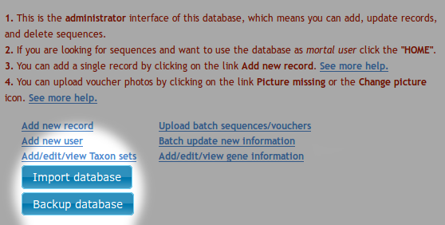

How to update Voseq¶
The easiest way to update VoSeq (that does not require new install of software or database):
Download the new files from github.
- Unpack the new files to your webserver directory (htdocs, webserver, etc).
- Rename your old “in use” VoSeq folder something like, ‘VoSeq_old’ or similar (e.g. “VoSeq-1.4.4” -> “VoSeq_1.4.4_old”).
- Give the newly downloaded VoSeq folder the same name as the old one had (e.g. “VoSeq-1.4.4”).
- Copy the file “conf.php” (in main folder) from the old version (e.g. “VoSeq_1.4.4_old”) to the new version (e.g. “VoSeq_1.4.4”).
Also:
If you have used and installed blast files, make sure to copy the files Blastdb_aliastool, Blast, Makeblastdb and Makembindex (.exe for all in windows), from the old version (blast/bin folder) to the new version (same folder). Then set permissions to read, write, and execute on the folder “blast/bin” and its content, as well as the folder “include/blast” (e.g.
chmod 777 -R path_to/~VoSeq_folder/blast/bin) .- For Mac users it may work better to use the
sudo chown -R _www VoSeq_foldercommand instead, since files belong to user instead of root!
- For Mac users it may work better to use the
If you have voucher photos stored, transfer them from the old one to the new one also (in
picturesfolder).
Backup your MySQL database¶
You can make backup copies of your data by using a button in the administrator interface. You will get all your voucher info and sequences into a SQL file. If your server dies you can easily restore your database by importing one of your backups using the Import database button.
{kind=link}